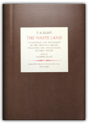
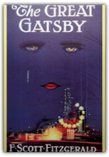
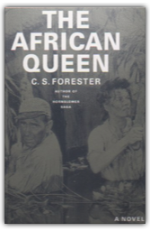
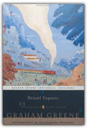

|

The Waste Land: A Facsimile and Transcript of the Original Drafts, Including the Annotations of Ezra Pound [Limited Edition]
T. S. Eliot, Valerie Eliot

250 copy limited edition in slipcase.
Every Man Dies Alone
Hans Fallada
This never-before-translated masterpiece—by a heroic best-selling writer who saw his life crumble when he wouldn’t join the Nazi Party—is based on a true story.

The Great Gatsby
F. Scott Fitzgerald
When "The Great Gatsby" was first published in 1925, it did not appear exactly as Fitzgerald had intended. This is the fully authorized text with notes by Fitzgerald biographer, Matthew J. Bruccoli.
The Year of the French
Thomas Flanagan
In 1798, Irish patriots, committed to freeing their country from England, landed with a company of French troops in County Mayo, in westernmost Ireland. They were supposed to be an advance guard, followed by other French ships with the leader of the rebellion, Wolfe Tone. Briefly they triumphed, raising hopes among the impoverished local peasantry and gathering a group of supporters. But before long the insurgency collapsed in the face of a brutal English counterattack.

The African Queen
C. S. Forester
First published in 1935, C.S. Forester's classic romantic adventure is a tale of opposites attracted. Allnut and Rose, a disreputable Cockney and an English spinster missionary, wend their way down a river in Central Africa in a rickety, asthmatic steam launch, and are gradually joined together in a mission of retaliation against the Germans. Fighting time, heat, malaria and bullets, the two have a dramatic rapprochement before the explosive ending of the book. This tale of unlikely love is thrilling and funny and ultimately satisfying.
Brother Tariq: The Doublespeak of Tariq Ramadan
Caroline Fourest
Tariq Ramadan is a global phenomenon. A Swiss-born Muslim activist, he is the grandson of the founder of the Muslim Brotherhood, the radical group credited with inspiring modern Islamic radicalism. Ramadan is fluent in English, French and Arabic. In Europe, he is the most quoted and circulated writer on Islam. His writings are a regular feature of major English-speaking newspapers, but his real message is revealed in his speeches to Muslim groups in France, Africa, and the Middle East. Caroline Fourest has carefully transcribed and translated those speeches and shows that Ramdan's ingenious rhetoric is a Trojan horse, fostering the anti-Semitic and anti-Christian values of fundamentalist Islam on its latest battlefield: Western civilization.
Hayek the Economist and Social Philosopher: A Critical Retrospect
Stephen F. Frowen
This volume provides a critical assessment of the wide spectrum of Hayek's celebrated work as economist and social philosopher. Included are papers on Hayek's early writings in the field of monetary economics, on which his later campaign against inflation, his controversial proposal for competing currencies, and his negative view of the impact of trade unions on the economy are based. Hayek's social philosophy, often regarded as the centre piece of his famous work, and the fundamental findings about human thinking, society, the market system and social rules of conduct it is based on, is evaluated by leading contemporary social philosophers. The volume leaves little doubt as to the considerable impact of Hayek's thinking on economic policy and social philosophy.  The Long Recessional: The Imperial Life of Rudyard Kipling
David Gilmour
The Long Recessional: The Imperial Life of Rudyard Kipling
David Gilmour
“Readable and reliable . . . [Gilmour’s] assessment of the political background of Kipling’s writings is exemplary.” —Earl L. Dachslager, Houston Chronicle
The Fear: Robert Mugabe and the Martyrdom of Zimbabwe
Peter Godwin
Journalist Peter Godwin has covered wars. As a soldier, he's fought them. But nothing prepared him for the surreal mix of desperation and hope he encountered when he returned to Zimbabwe, his broken homeland.
Wonderful Life: The Burgess Shale and the Nature of History
Stephen Jay Gould
"[An] extraordinary book. . . . Mr. Gould is an exceptional combination of scientist and science writer. . . . He is thus exceptionally well placed to tell these stories, and he tells them with fervor and intelligence."—James Gleick, New York Times Book ReviewHigh in the Canadian Rockies is a small limestone quarry formed 530 million years ago called the Burgess Shale. It hold the remains of an ancient sea where dozens of strange creatures lived—a forgotten corner of evolution preserved in awesome detail. In this book Stephen Jay Gould explores what the Burgess Shale tells us about evolution and the nature of history.

Orient Express
Graham Greene
Orient Express follows five or six characters and exposes them psychologically as they travel along the famed Orient Express train line. In a thumbnail the characters are a Jewish businessman, an exiled communist leader, a lesbian newspaper reporter, A German criminal, and a plain, working-class dancing girl from London.
Sleeping on a Wire: Conversations with Palestinians in Israel
David Grossman
Torn between conflicting identities — Arabs in the eyes of Jews, and Israelis in the eyes of the Palestinians — the Israeli Arabs live in a painful dilemma. Grossman's account of his personal journey into their world is the story of this painful, convoluted state of affairs, about ferment beneath the surface, and an intensifying bitterness that led to the current open conflict. |
 Made with Delicious Library
Made with Delicious Library
Springfield, VA zipflap congrotus delicious library Fogus, Michael